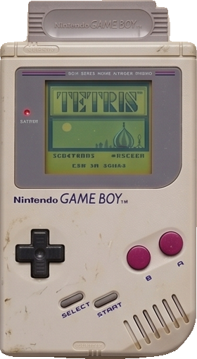
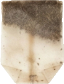
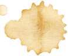
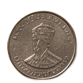
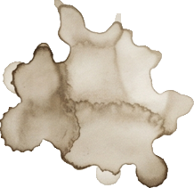
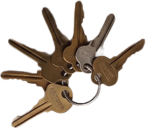

OBJ Bouncy
let bouncy = {
size: 16,
posX: 10,
posY: 15,
vitX: 1.2,
vitY: 0.9,
name: "un chien",
color: '#2274A5',
update: function () {
this.posX = this.posX + this.vitX;
this.posY += this.vitY;
if (this.posX + this.size > width
|| this.posX < 0) {
this.vitX = this.vitX * -1;
}
if (this.posY + this.size > height
|| this.posY < 0) {
this.vitY *= -1;
}
stroke(this.color);
strokeWeight(2);
noFill();
square(this.posX, this.posY,
this.size);
}
};

Bouncy est un objet littéral avec sa taille, position et vitesse. La méthode update() sert à faire avancer l'objet à chaque frame.
this.posX = this.posX + this.vitX; le fait aller à droite ou à gauche. this.posY += this.vitY; le fait aller en bas ou en haut.
Quand l'objet touche un bord du canvas, on inverse la vitesse (vitX * -1) pour le faire rebondir.
Trois instances héritent via Object.create() avec des vitesses et couleurs différentes — chacune rebondit de manière indépendante.